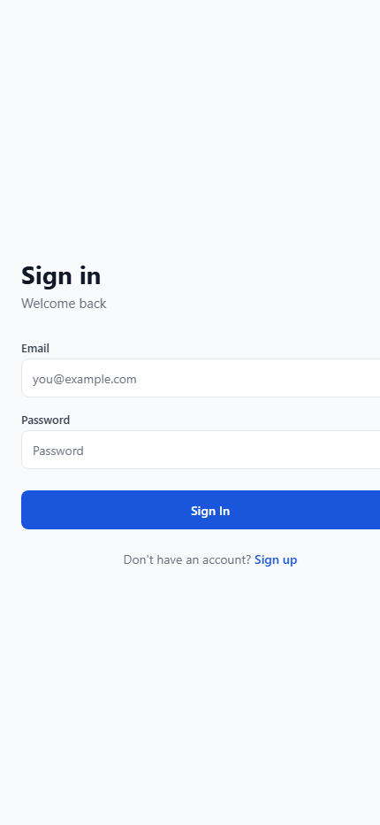
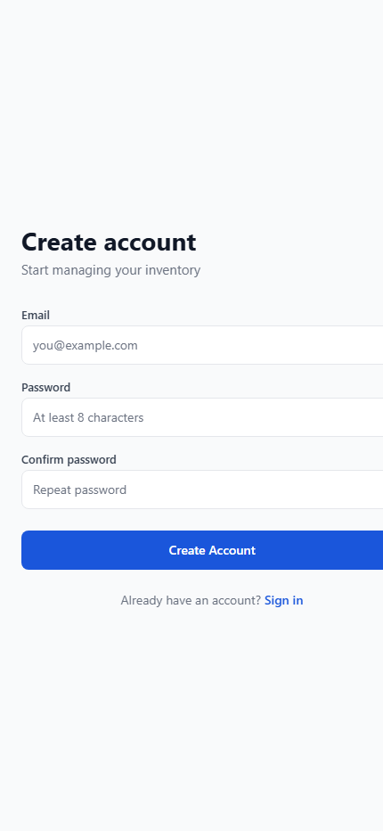

Structure inventory by real business locations
Set up a business workspace and organize inventory around locations such as bins, rooms, shelves, or staging areas.
Business inventory app
BinFlow helps small teams manage inventory in shared business workspaces. Create locations, track items, record quantity changes, attach item photos, and review recent stock activity without relying on scattered spreadsheets.
Core features
Set up a business workspace and organize inventory around locations such as bins, rooms, shelves, or staging areas.
Store item names, optional notes, barcodes, quantities, and photos so stock records stay easier to identify and update.
Review adjustments, moves, and other stock events so the team can trace what changed without recreating the day from memory.
Workflow
Start with a shared business workspace, then add the locations your inventory actually moves through.
Update quantities, move inventory between locations, and attach item details as work happens.
Use the activity history and invited-team model to keep shared operations aligned.
Current App Screens

Current account access screen captured from the running `business-stow` app build.

Current sign-up screen captured from the same live app build.
Policy-ready pages
Explains what BinFlow collects, how it is used, when it is shared, and how users can request help with their data.
Covers acceptable use, workspace responsibilities, user content, service changes, and core legal terms.
Provides a stable public support URL with direct contact details and the minimum troubleshooting guidance users need.
Legal and support
BinFlow is operated by Patrick Wong. Questions, privacy requests, and support issues can be sent to zenstow.business@gmail.com.